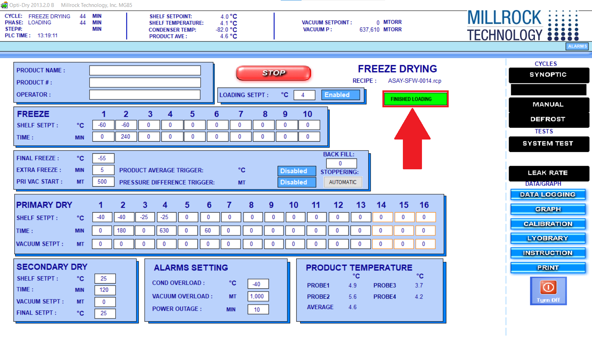

Quiz 1: Trees & Freeze Dryers
Home
Modules
Quizzes
Scores
Trees & Freeze Dryers
1. Name of the recipe or protocol that is used to freeze-dry pouches?
A. ASAY-SFW-0020
B. ASAY-SFW-0014
C. ASAY-SFW-0018
D. ASAY-SFW-0012
2. After clicking the "finished loading" button, what must the internal pressure drop to?
A. 587,000 mTorr
B. 500 mTorr
C. 387,000 mTorr
D. 240,000 mTorr
3. What is the loading set point temperature for the protocol?
A. -4 C
B. 0 C
C. 4 C
D. 10 C
4. What status should the product average and pressure difference triggers be set to?
A. Disabled
B. Enabled
5. What setting should the stoppering feature be set to?
A. Automatic
B. Manual
Use this image to answer the next 5 questions

6. What phase is the freeze-dryer currently in?
A. Loading
B. Freeze
C. Final Freeze
D. Primary Dry
7. How long has the freeze-dryer been in that phase?
A. 24 minutes
B. 44 minutes
B. 84 minutes
B. 4 minutes
8. What is the shelf temperatures current reading?
A. 4.9 C
B. 4.6 C
C. 4.1 C
D. 4.0 C
9. What is the internal pressure of the freeze-dryer chamber?
A. 637,610 MT
B. 488,000 MT
C. 387,000 MT
D. 187,000 MT
10. How long has it been since the freeze dryer protocol was started?
A. 24 minutes
B. 44 minutes
C. 84 minutes
D. 4 minutes
Submit
Back to
Module 1.2
Next to
Module 2